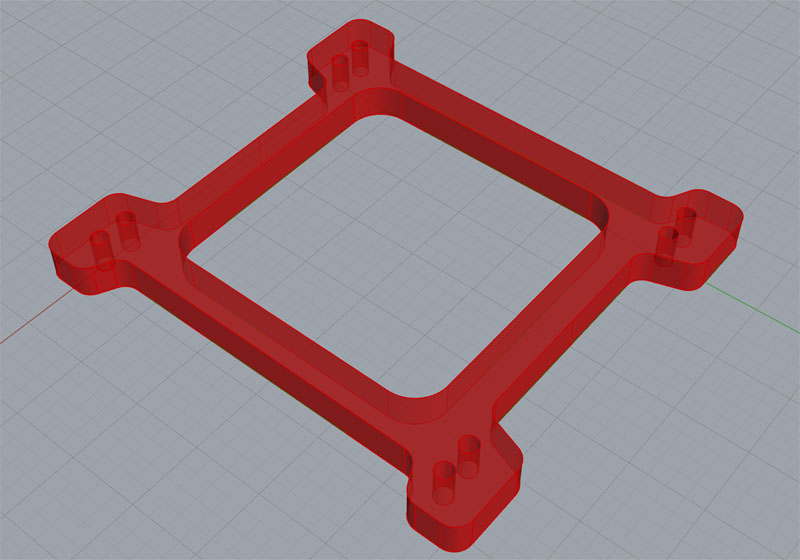

Deliverable: Each feature programmed and ready to post so we can get g-code.

This page drills down into our article, "Secrets of CAM for Beginners." It's a good introduction because it takes you step by step through using two different CAM packages to generate part programs for the same simple part. This will help you to understand what's going on when we talk about using CAM software to do CNC programming.
Both packages are pretty simple and low-end. There are much more complex packages out there. In general, most CAM packages require you to know a fair bit about machining to use them. You will be going over each feature of the part in your CAD model and answering a whole bunch of questions for the CAM software about how you want to machine the feature.
Many of the questions are going to be hard for a beginner to answer without some experience and knowledge to go on:
- What kind of toolpath should you use? You'll need to understand the basic choices such as pockets, 2D profiles, 3D profiles, and more.
- What method do you want to use to enter and exit the toolpath? Plunge, ramp, and helix to name but a few. What are their strengths and weaknesses? Why would you choose one over the other?
- Which tool do you want to use to cut the feature?
- What Cut Width (also called Stepover) and Cut Depth (how many levels or Step Downs) do you want to use?
- What Feeds and Speeds should be used?
- etc..
Most beginners think that CAM is simple--you just load the CAD model, push a button, and out comes the g-code. Unfortunately, having to make all those choices makes most CAM software far from simple for beginners.
My advice to many starting out is to plan on using more than one CAM package. Start with the simplest possible package. We recommend and even sell MeshCAM because it comes closest to that idea of push a button and out comes g-code than any other package I've seen. It's super simple but powerful enough to make complex parts. You'll be making parts a lot sooner and without the steep learning curve as a result.
Eventually, when you've learned a lot more, you will wind up wanting a more powerful CAM package. That's fine--you will have gotten a ton of use out of MeshCAM and it's very inexpensive. I still use it from time to time when I have something simple to do. It's just faster and less cumbersome.
Here are a variety of resources to help you when trying to answer the many questions CAM software will throw at you:
Resources:
- 2 Tools for Calculating Cut Dpeth and Cut Width When Milling: These two questions are important to answer, and these 2 tools give you easy systematic help in answering them. They will help you a lot!
- Toolpath Considerations: How to enter and exit a toolpath? This article covers that. What to do about Feeds and Speeds for CAM? Ditto.
- 7 Software Excuses for Bad Surface Finishes: Goes into some of the choices you'll be making for the CAM software and their impact on surface finish.
Consider these articles required reading if you're a Beginner. They will fill in many of the blanks that are giving you a headache when you sit down to try to use your CAM software.
|